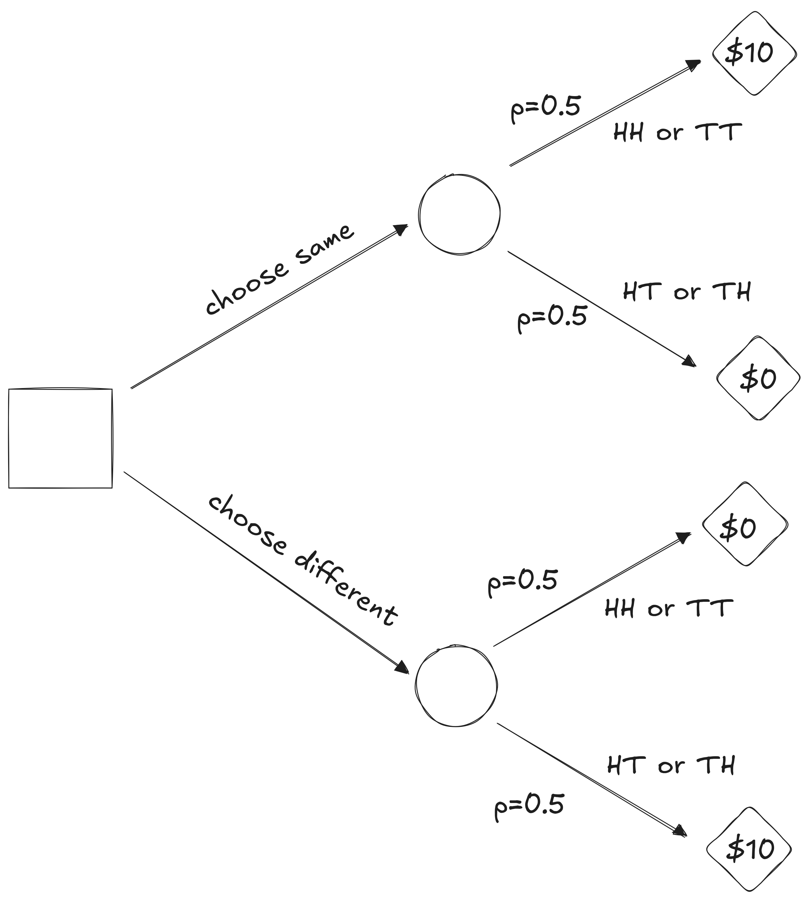
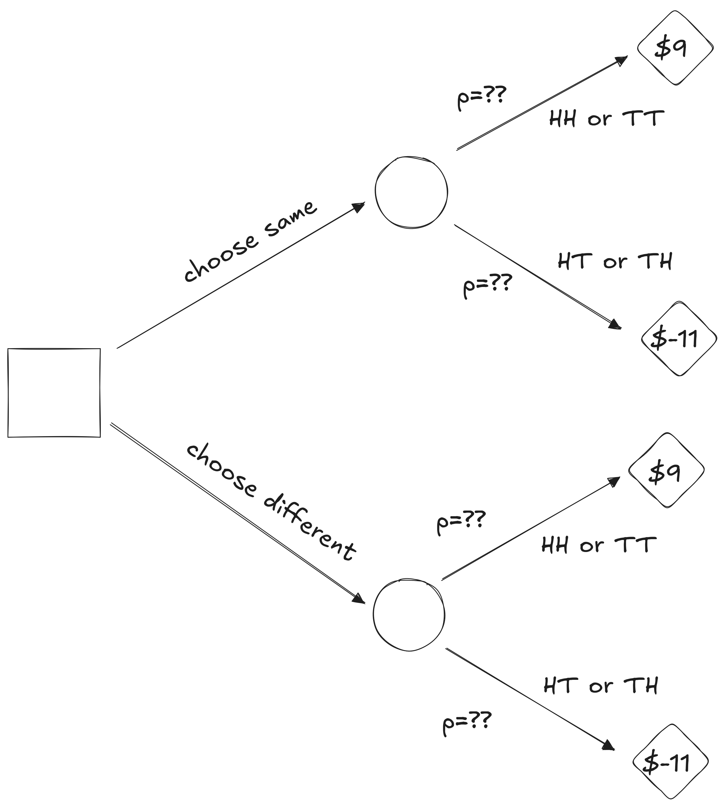
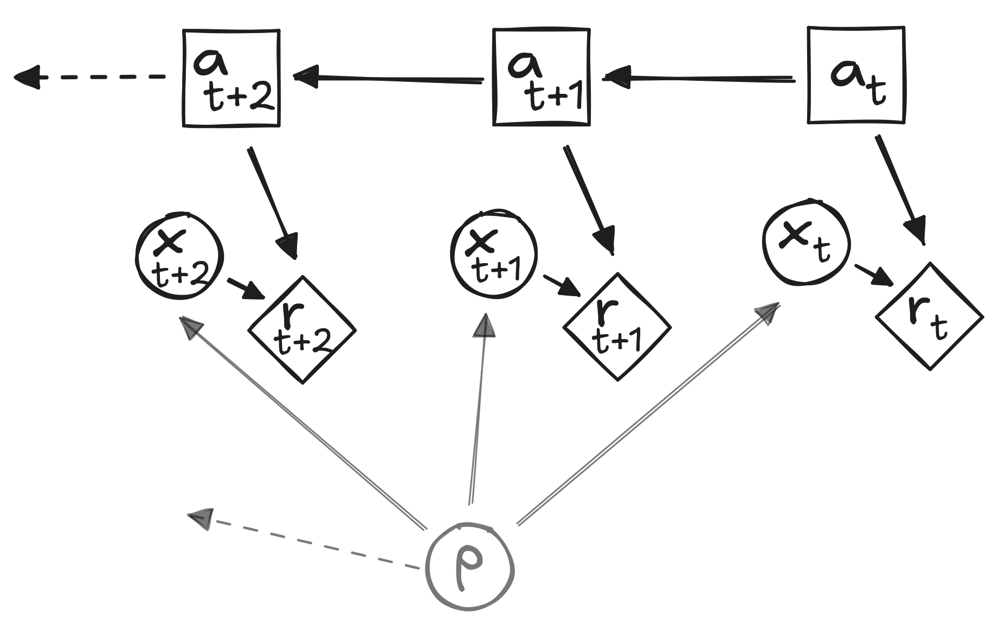
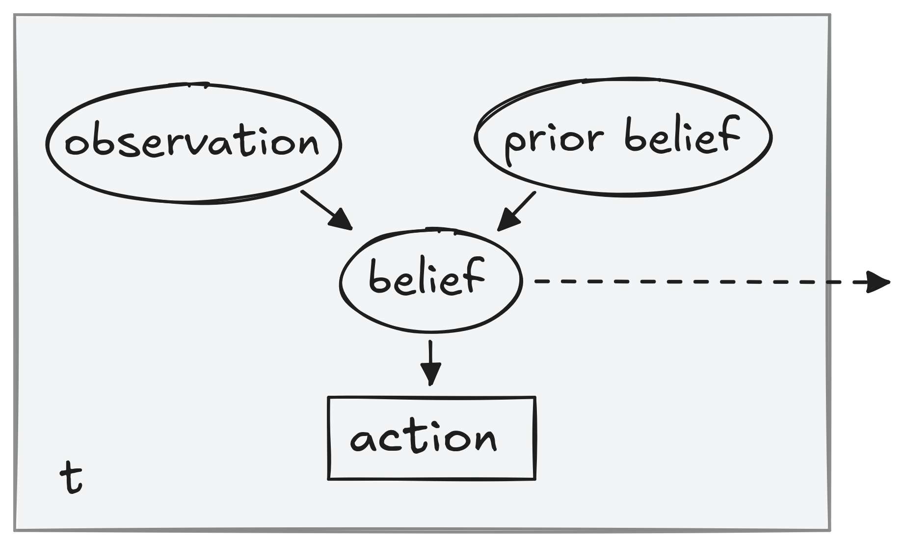

Partially-Observable Markov Decision Processes
CSCI 4511/6511
Announcements
- Homework Four: 11 Nov
- Extra Credit HW: Due 4 Dec (releases next week)
- Project Proposals: 13 Nov
- Final Exam: 4 Dec
- Project Deadline: 13 Dec
MDP Example
Belief
State Uncertainty
- Markov Decision Process (MDP):
- Assumes state is observed
- Policy returns action as function of state
- Decision-maker observes state, selects action
- Partially-Observable Markov Decision Process (POMDP):
- State not fully observed
- Decision-maker observes… something
- That something is related to state
Decision Theory
- How do we make uncertain decisions?
- How do we consider uncertainty?
Decision

Games of Luck
Closer to Reality
Belief
Updating Beliefs
Agent Function
Beliefs
- Parametric
- Coin probability example
- Nonparametric
- Particle filters
Need a world model.
Discrete State Filter
- Finite state space
- Finite observation space
- Categorical probability distributions
- State is a vector
- Belief state is a vector
Updating Beliefs
Observation model \(O\)
- \(O(o | a, s')\)
- Probability of observing \(o\) given action \(a\) and transition to state \(s'\)
- Part of our model
- We want: \(P(s' | b, a, o)\)
Updating Beliefs
\(P(s' | o, b, a) \propto P(o | s', b, a,) \cdot P(s' | b, a)\)
\(= O(o | a, s') \cdot P(s' | b, a)\)
\(= O(o | a, s') \sum \limits_s P(s' | b, a, s) P(s | b, a)\)
\(= O(o | a, s') \sum \limits_s T(s' | s, a) b(s)\)
Example
State 0: Sated \(\quad \quad\) State 1: Hungry
Action 0: Ignore \(\quad \quad\) State 1: Feed
\(T_{ignore} = \begin{bmatrix} 0.9 & 0.1 \\ 0 & 1 \end{bmatrix}\)
\(T_{feed} = \begin{bmatrix} 1 & 0 \\ 1 & 0 \end{bmatrix}\)
\(O( \text{quiet} | \text{sated}) = 0.9\)
\(O( \text{crying} | \text{sated}) = 0.1\)
\(O( \text{quiet} | \text{hungry}) = 0.2\)
\(O( \text{crying} | \text{hungry}) = 0.8\)
Continuous States
- Discrete state filtering impossible
- Extended to continuous case
- Summation becomes an integral
- We need to make assumptions
- Linear gaussian assumption: Kalman Filter
Particle Filter
- Discretize continuous belief state space
- State space can be continuous
- Transition space can be continuous
- Arbitrary dynamics
Particle Filter Details
- For each particle:
- Sample result from transition model
- For each result:
- Weight result by observation model
- From full result:
- Resample
Decisions
Solving POMDPs
- POMDP \(\rightarrow\) Belief-State MDP
- State space: all beliefs
- Action space: identical
- Reward space: identical
Belief state space is continuous.
Conditional Planning
- Plan is a “small” decision tree
- Take an action
- Observe next observation
- Take subsequent actions based on observation
Conditional Plan - Example
Plan Utility
\(U^\pi(s) = R(s, \pi()) +\) \(\gamma \left[ \sum \limits_{s'}T(s' | s, \pi()) \sum \limits_o O(o | \pi(), s')U^{\pi(o)}(s')\right]\)
- Can be evaluated recursively
- Finite horizon
- Tractable for small horizons
- Exponential explosion for larger horizons
Alpha Vectors
Expected utility of belief:
\(U^\pi(b) = \sum \limits_s b(s) U^\pi(s)\)
As a vector:
\(U^\pi(b) = \sum \limits_s b(s) U^\pi(s) = \boldsymbol{\alpha}^T_\pi\mathbf{b}\)
\(\boldsymbol{\alpha}\) - expected utility under plan \(\pi\) for each state
Using Alpha Vectors
- Generate h-step conditional plans
- Calculate \(Q(b,a)\)
- Compare with \(Q(s, a)\) for MDPs
- Extract action
Plan Utility
Monte Carlo Tree Search
Multi-Armed Bandits
- Slot machine with more than one arm
- Each pull has a cost
- Each pull has a payout
- Probability of payouts unknown
- Goal: maximize reward
- Time horizon?
Solving Multi-Armed Bandits
Confidence Bounds
- Expected value of reward per arm
- Confidence interval of reward per arm
- Select arm based on upper confidence bound
- How do we estimate rewards?
- Explore vs. exploit
Bandit as MDP?
Bandit Strategies
Gittins Index: \(\lambda = \max \limits_{T>0}\frac{E[\sum^{T-1}\gamma^tR_t]}{E[\sum^{T-1}\gamma^t]}\)
Upper Confidence Bound for arm \(M_i\):
- \(UCB(M_i) = \mu_i + \frac{g(N)}{\sqrt{N_i}}\)
- \(g(N)\) is the “regret”
Thompson Sampling
- Sample arm based on probability of being optimal
Monte Carlo Methods
Tree Search
- Forget DFS, BFS, Dijkstra, A*
- State space too large
- Stochastic expansion
- Impossible to search entire tree
- Can simulate problem forward in time from starting state
Monte Carlo Tree Search
- Randomly simulate trajectories through tree
- Complete trajectory
- No heuristic needed1
- Need a model
- Better than exhaustive search?
Selection Policy
- Focus search on “important” parts of tree
- Similar to alpha-beta pruning
- Explore vs. exploit
- Simulation
- Not actually exploiting the problem
- Exploiting the search
Monte Carlo Tree Search
- Choose a node
- Explore/exploit
- Choose a successor
- Continue to leaf of search tree
- Expand leaf node
- Simulate result until completion
- Back-propagate results to tree
Monte Carlo Tree Search
Upper Confidence Bounds for Trees (UCT)
- MDP: Maximize \(Q(s, a) + c\sqrt{\frac{\log{N(s)}}{N(s,a)}}\)
- \(Q\) for state \(s\) and action \(a\)
- POMDP: Maximize \(Q(h, a) + c\sqrt{\frac{\log{N(h)}}{N(h,a)}}\)
- \(Q\) for history \(h\) and action \(a\)
- History: action/observation sequence
Partially-Observable UCT
References
Mykal Kochenderfer, Tim Wheeler, and Kyle Wray. Algorithms for Decision Making. 1st Edition, 2022.
Richard S. Sutton and Andrew G. Barto. Reinforcement Learning: An Introduction. 2nd Edition, 2018.
- Stanford CS228 (Mykal Kochenderfer)